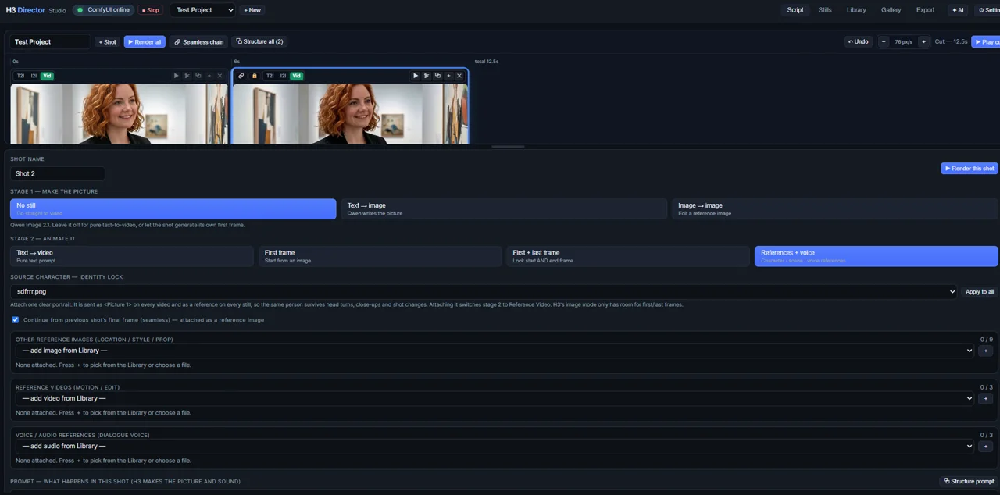
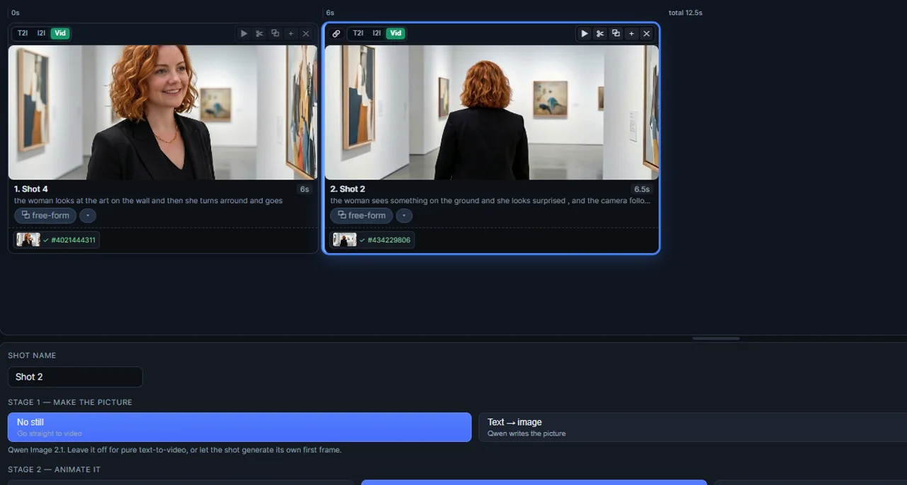
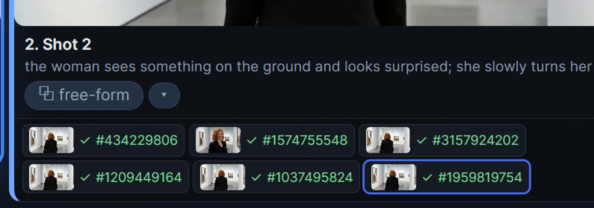

AI & Automation
H3 Director Studio — Local AI Film Timeline
A real editing desk for AI film work. You arrange shots on a timeline, make the stills, animate them with MiniMax H3, lock one character across every shot and chain the shots into one continuous take. Your existing ComfyUI install stays headless in the background as the render engine — you never assemble node graphs by hand.
Overview
ComfyUI is an excellent engine, but its node canvas is a poor surface for directing a film. A director thinks in shots, takes, continuity and exports. H3 Director keeps the engine and replaces the canvas with a timeline: every shot has its own still, its own video mode, its own references and its own stack of takes.
The work happens in two stages. Stage 1 makes the picture with Qwen Image 2.1 — either text-to-image from a written prompt, or image-to-image when you want to re-frame and re-light an existing picture. Stage 2 animates it with MiniMax H3: text-to-video, image-to-video from a first frame, first+last-frame lock, or reference mode for character, location and voice control. The browser talks to an Express backend; the backend compiles the shot into an API-format ComfyUI prompt, stages the media and collects the result.
What it does well
- Real shot timeline. Add, reorder and cut shots on a ruler; set duration per shot; render one shot or the whole film.
- Image generation is a first-class stage. Text-to-image and image-to-image are not hidden behind the video step — they are two of the four ways to make a shot's picture.
- Four video modes. Pure text-to-video, first frame, first + last frame, and references + voice for character, scene and audio conditioning.
- Character identity lock. Bind one source portrait to a project or a shot. It rides into Qwen stills and into H3 as an identity-only reference — face, hair, age, skin tone and build hold while pose and framing come from the shot.
- Exact seamless chaining. Enable “Continue from previous shot's final frame” and the next clip starts on the real previous final frame, then morphs into generated motion with optical-flow-style interpolation. No jump, no frozen first frame, no doubled silhouette.
- Takes, not throwaway renders. Every render keeps its seed, prompt, graph and log. Compare variants in the Gallery and accept the one that ships.
- References with real limits. Up to nine images, three videos and three audio references per shot, content-hashed and staged into ComfyUI so the same file is never uploaded twice.
- AI co-director. The built-in assistant drafts structured shot prompts and carries the project's character lock into its suggestions.
- One clean export. Accepted takes are concatenated into a single MP4 with the original timeline order and audio preserved.
How a shot is made
- Set the frame. Choose no still, text-to-image, image-to-image, or let the video model imagine the opening from the prompt.
- Write the action. The prompt describes what happens in the shot. A structure helper turns loose notes into subject, action, camera and environment.
- Attach identity. The project or shot portrait is bound as the character reference, so a head turn or a new location does not become a new person.
- Choose the video mode. Text-only, first frame, first + last frame, or reference mode — the app compiles the correct H3 graph automatically.
- Render through ComfyUI. The backend submits the graph, polls the job and saves the result as a new take with its full provenance.
- Chain the seam. For the next shot, the exact final frame becomes frame 0; a short tail of the previous clip is attached as a video reference; a motion-compensated morph carries the image into new motion.
- Accept and export. Pick the best take per shot and compile the film.
Why the seam needed engineering
MiniMax H3 conditions on keyframes but does not copy them into the output. A start frame is therefore only a strong suggestion — the first generated frame is similar, not identical. Three separate faults had to be solved before “continue from previous shot” meant what it says:
- The wrong image led the shot. In reference mode H3 builds frame 0 from the first picture, so the identity portrait was quietly becoming the opening frame. The seam now leads as Picture 1 and the portrait follows as Picture 2, labelled identity-only.
- The location drifted. A single start frame cannot hold a room once the camera moves. The compiled prompt now locks the seam's environment, lighting and camera, and a short tail clip of the previous shot is attached as a video reference.
- The cut froze or doubled. Holding the exact frame still for several frames made the film appear to stop; a plain crossfade superimposed two bodies. The final conform writes the exact frame as frame 0, then morphs into the generated footage with motion-compensated interpolation — one clean body in one place, moving from the first frame.
The result is measurable, not a hopeful prompt: the first 0.1 seconds of the chained shot stay on the previous frame, and adjacent frames across the cut keep changing instead of repeating.
See it in action
Real screens from the app. Click any screenshot to see it full size.
Direct with the shots visible
The timeline is not a list of prompts — each tile carries its rendered frame. Here both shots are visible at once, with the source character bound in the inspector and reference mode selected for the second shot.

Every shot is a real frame
The first shot looks away down the gallery; the second starts on that ending and turns back. The tile thumbnails, take chips and prompt stay together, so you can see what the shot is before you render it.


Compare takes, keep the best
Every render lands in the shot's take strip as a thumbnail with its seed. The accepted take is highlighted; the others stay available for comparison instead of being thrown away.


The two-shot cut
A short test of the whole chain: shot one walks away from the camera through a gallery; shot two begins on the exact final frame of shot one, then turns the same woman back toward the camera without changing the room or the face.
Under the hood
At a glance
| Type | Local AI film director and video studio |
|---|---|
| Input | Written shot prompts, stills, source character, video and voice references |
| Stage 1 | Text-to-image and image-to-image with Qwen Image 2.1 |
| Stage 2 | Text-to-video, first frame, first + last frame, references + voice with MiniMax H3 |
| References | 9 images, 3 videos, 3 audio per shot — one video slot reserved for continuity |
| Engine | Your existing ComfyUI install, headless on the local machine |
| Output | Shot takes, accepted cut, single MP4 export |
| License | Open source, MIT for the code; model weights keep their own licenses |